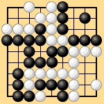
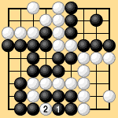

| 2.3.4 Three Points without Capturing (1) |
|---|
| In Dia. 2-11-1 four black stones are caught in a snap-back on the bottom edge. If you have even a slight knowledge of the game, you should see nothing strange in removing these four stones at the end without further play. But if we think about it, this is a little strange. Black is not in a removable state yet because he still has a liberty. |
|  |
| Dia. 2-11-1 |
|---|
| If Black plays 1 in Dia. 2-11-2 and captures White's stone, White will recapture at 2, taking a net total of nine points of profit. If White removes the four black stones without actually capturing them in Dia. 2-11-1 his profit is also nine points. Since the result happens to be the same, no questions are generally raised. |
|  |
| Dia. 2-11-2 |
|---|